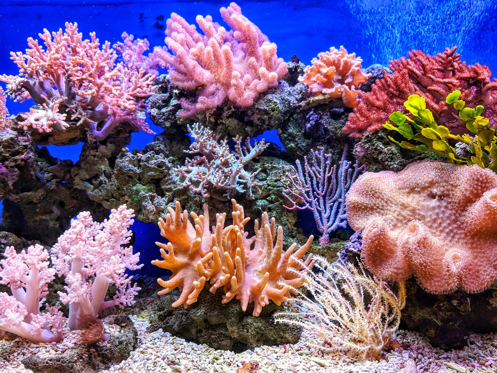
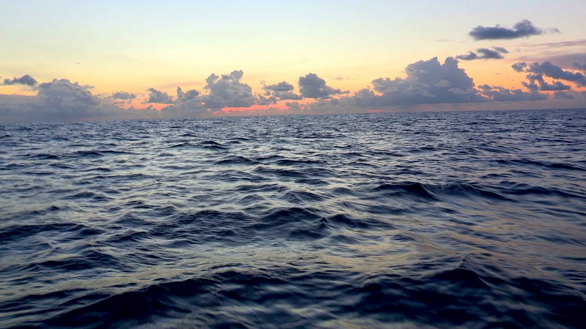
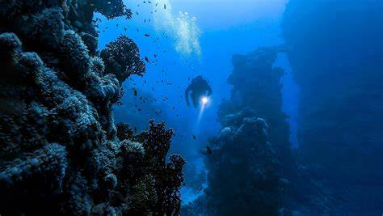
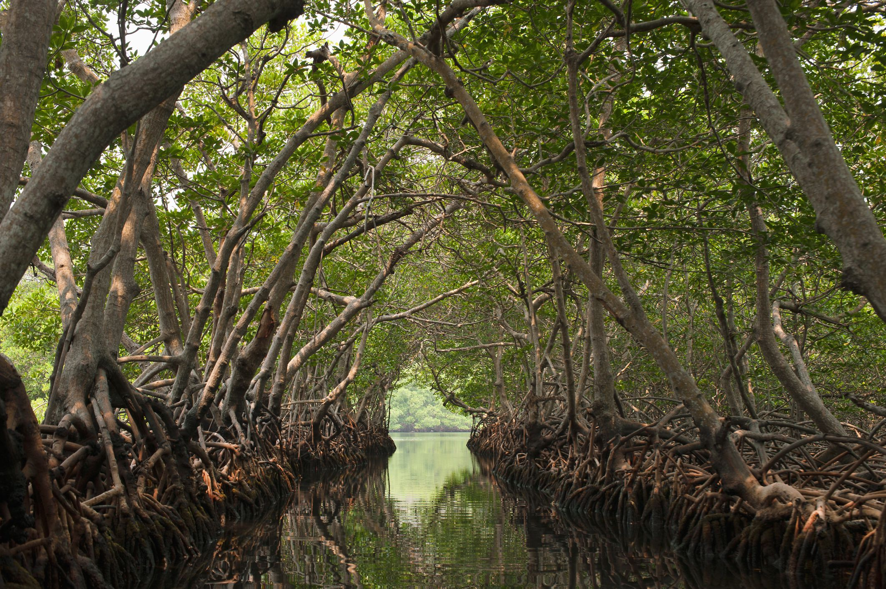
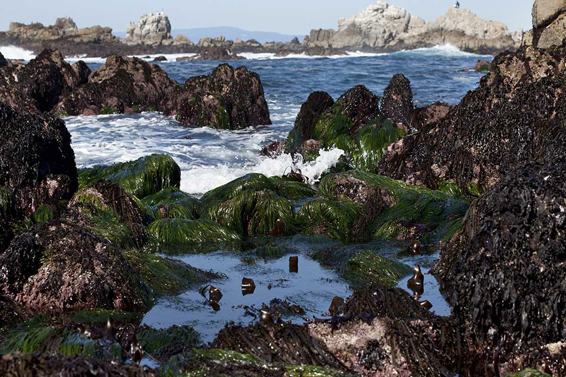
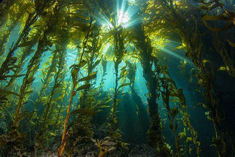
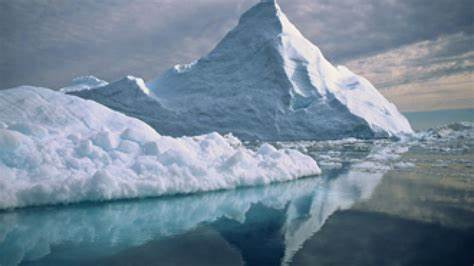

Coral Reefs

Coral reefs are underwater structures formed by colonies of tiny coral polyps, creating diverse ecosystems rich in biodiversity.
Features; Colorful corals, fish, invertebrates, and symbiotic relationships, providing essential habitat and nursery grounds.
Importance; High biodiversity, coastal protection, tourism, fisheries, and carbon sequestration.
Open Ocean

The open ocean refers to vast expanses of deep water away from coastlines, characterized by diverse pelagic and deep-sea environments.
Features; Pelagic zones, mesopelagic and bathypelagic zones, marine life adaptations to depth, currents, and nutrient availability.
Importance; Global food web, oxygen production, climate regulation, shipping routes, and scientific exploration.
Deep Sea

The deep sea encompasses the darkest and deepest parts of the ocean, including abyssal plains, trenches, and hydrothermal vents.
Features; Extreme pressure, cold temperatures, unique adaptations, bioluminescent organisms, chemosynthesis, and mysterious habitats.
Importance; Scientific discovery, biodiversity hotspots, mineral resources, and understanding extreme environments.
Estuaries

Estuaries are transitional zones where rivers meet the sea, characterized by brackish water, tidal fluctuations, and diverse habitats.
Features; Mangroves, salt marshes, mudflats, nurseries for fish and invertebrates, water filtration, and sediment deposition.
Importance; Nursery grounds for marine life, coastal protection, water quality, nutrient cycling, and human recreation.
Mangroves

Mangroves are coastal wetlands with salt-tolerant trees and shrubs, forming intricate root systems and providing essential habitats.
Features; Root systems, biodiversity, nurseries for fish and crustaceans, coastal protection, and carbon sequestration.
Importance; Erosion control, storm protection, fisheries, carbon storage, and habitat for endangered species.
Intertidal Zones

Intertidal zones are areas along shorelines that are alternately exposed and submerged by tides, creating dynamic habitats.
Features; Tide pools, rocky shores, sandy beaches, diverse organisms adapted to tidal fluctuations, and wave action.
Importance; Adaptations to wave energy, food sources for shorebirds, marine life connectivity, and ecological transitions.
Kelp Forests

Kelp forests are underwater ecosystems dominated by large brown algae, providing complex habitats and food sources for marine life.
Features; Giant kelp, diverse fish, invertebrates, sea otters, nutrient cycling, and oxygen production.
Importance; Marine biodiversity, fisheries, carbon sequestration, coastal protection, and ecotourism.
Polar Regions

The Arctic and Antarctic regions are polar habitats characterized by sea ice, extreme cold, and unique adaptations among marine species.
Features; Icebergs, sea ice, polar bears, seals, penguins, krill, ice-dependent ecosystems, and seasonal changes.
Importance; Climate regulation, marine food webs, polar research, sea level rise, and impacts of climate change.